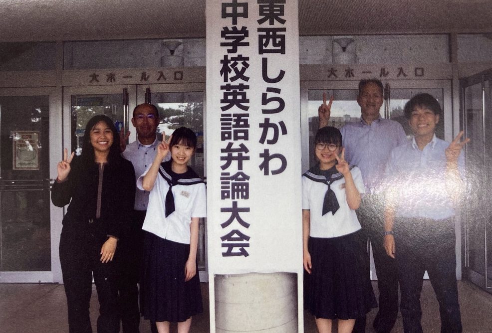
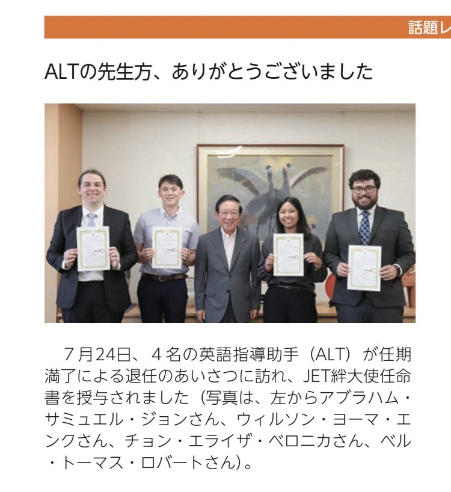

Projects
English Teacher with Shirakawa Board of Education
I spent two years teaching English in the countryside of Japan. Many students were taught to get good exam grades, they could not have even a small conversation in English. They were not being taught with intention. I was determined to have them enjoy what they were learning and be able to use it in the real world. This is where my experience with thoughtfully integrating tech began. I started to tailor my instruction with game design, such as when I made an interactive Animal Crossing-themed powerpoint game. Instead of drilling lessons from the textbook just to pass, this game allowed my students to engage with each other while practically using the English I was there to teach them.

Fukushima Cultural Ambassador
I volunteered for the United Nations and Educational Scientific Organization, teaching a class of eighty adult learners ranging from 19 to 90 years old. I met up with the students twice a week and held in person classes. Although this was a new challenge, it expanded my understanding of how individuals learn across different stages of life. I made visual games on Canva and used Kahoot while considering the impairments of some of the older learners. It showed me how to adapt lessons based on the community I am teaching. Adults choosing to learn something new after their formal education also motivated me to be a better teacher. This experience led me to be recognized by the Mayor and received an award for being a Cultural Ambassador

Site Facilitator
In my current role, I work with twenty staff who I support as future educators all while managing a classroom size of one-hundred elementary students. I delegate duties between my 16 staff and assistant. In my current role, I am assigned to work on our Curriculum Development team to create lessons, trainings, and educational activities. This experience has helped me recognize areas of improvement, particularly in designing effective learning experiences while intentionally integrating technology. This experience is the most challenging in the sense of responsibility. I’ve had to use all of my previous experiences to prepare myself as a trainer and leader in this role.